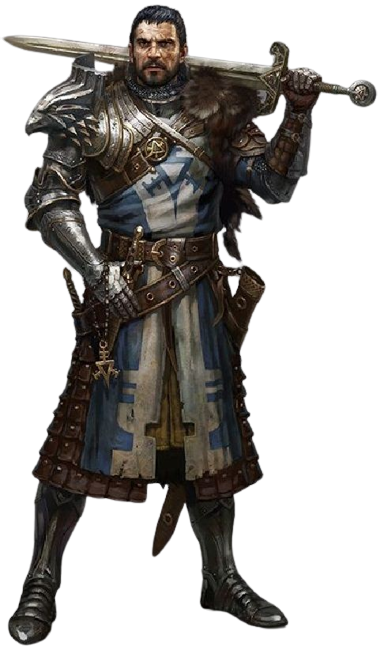

A dificuldade dos acessos é só um primeiro obstáculo na aventura. Apesar das dificuldades, Hortan e seu companheiro de viagem
seguiram confiantes e pacientes em cima da lama, até avistarem uma placa informando a chegada da grande floresta Belfoforth.
Ao que parecia, poucas horas havia passado desde que Hortan havia chegado a floresta, quando avistou um pequeno acampamento,
onde um hobbit surgiu de trás de uma moita pedindo a sua ajuda. Disse que um companheiro ferido necessitava de um pouco de álcool
para estancar uma ferida. Preocupado em ser uma possível emboscada, o cavaleiro tem uma decisão a seguir:
Tentar ajudar o Hobbit, ou seguir seu caminho com pressa em direção a floresta, em busca da lenda do tesouro. O que deseja fazer?